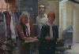

After a gap of approx. 14 mins 30 secs, First scene featuring Ellen Foley as "Jacqui", a Production Assistant, at
"National Video Centre Recording Studios". Duration 1 min 50 secs.
After a gap of approx. 14 mins 30 secs, First scene featuring Ellen Foley as "Jacqui", a Production Assistant, at
"National Video Centre Recording Studios". Duration 1 min 50 secs."Tootsie", 1982, 112 minutes, colour.
After a gap of approx. 14 mins 30 secs, First scene featuring Ellen Foley as "Jacqui", a Production Assistant, at
"National Video Centre Recording Studios". Duration 1 min 50 secs.

After a gap of approx. 4 mins 50 secs, second scene featuring Jacqui (Ellen), with Michael Dorsey now as Dorothy
(Dustin Hoffman), being introduced to the show's director. Duration 4 mins 20 secs but seen only at the start.
 After a gap of approx 10 mins, third scene with everyone on the set of the show. Ellen is seen a total of 8 times and
for a total of 8 seconds in this scene of total duration 4 mins 33 secs.
After a gap of approx 10 mins, third scene with everyone on the set of the show. Ellen is seen a total of 8 times and
for a total of 8 seconds in this scene of total duration 4 mins 33 secs.
After a gap of approx. 5 mins 10 secs, fourth scene featuring Ellen, duration 1 min 3 secs, seen for 8 secs.
 After a gap of approx. 9 mins 20 secs, fifth scene featuring Ellen, she is seen a total of 4 times over the duration
of 1 min 2 secs.
After a gap of approx. 9 mins 20 secs, fifth scene featuring Ellen, she is seen a total of 4 times over the duration
of 1 min 2 secs.
After a gap of approx 21 mins 10 secs, Dorothy becomes a major star!!
 After a further gap of approx 23 mins 10 secs, sixth scene featuring Ellen, duration 35 secs. This is where the cast
are told that part of the show will have to be done live!
After a further gap of approx 23 mins 10 secs, sixth scene featuring Ellen, duration 35 secs. This is where the cast
are told that part of the show will have to be done live!
 Finally after a gap of approx 2 mins 20 secs, the scene where "Dorothy" is revealed to be Michael Dorsey. Ellen has
the opportunity to react spectacularly when this revelation occurs.
Finally after a gap of approx 2 mins 20 secs, the scene where "Dorothy" is revealed to be Michael Dorsey. Ellen has
the opportunity to react spectacularly when this revelation occurs.
Oh! Just in case you wanted to know what the film was actually about....
Dustin Hoffman stars as Michael Dorsey, an out of work actor who finally scores a part, but while secretly pretending to be
a woman, Dorothy. While acting this part he fires everyone up to more greatly respect women in society. Dorothy becomes a
major star but Michael is falling in love with his co-star Julie (Jessica Lange). Finally facing another season of filming
as a woman, and with pangs of love for Julie, he reveals during a live broadcast portion of the show that he is actually a
man. Julie is furious with him but finally reconciliation begins between them.
What's that? You didn't see much of Ellen Foley? Well we have a particularly appropriate saying for this film, here in the Ellen Foley Film and Television section.
Go back to the start of Ellen Foley Information.
{kind=link}